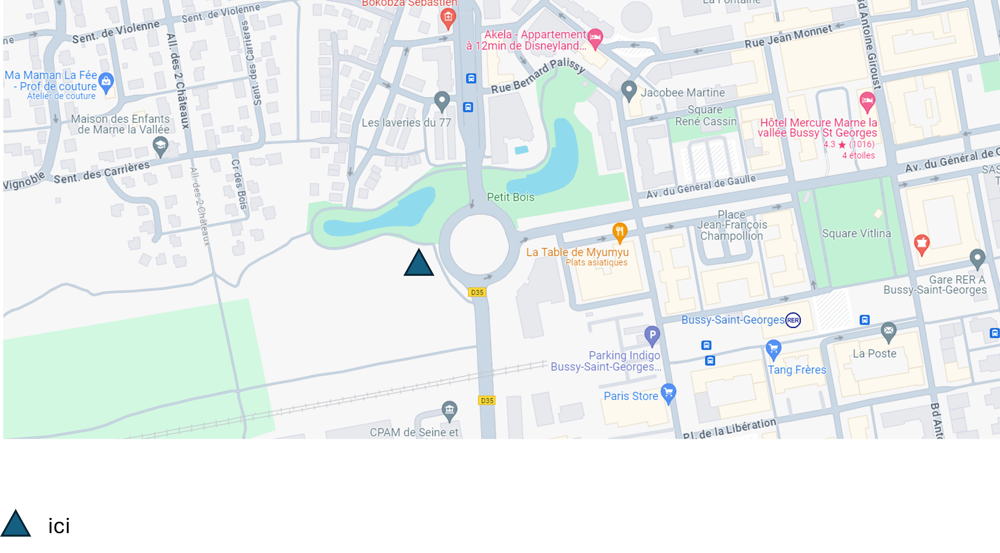
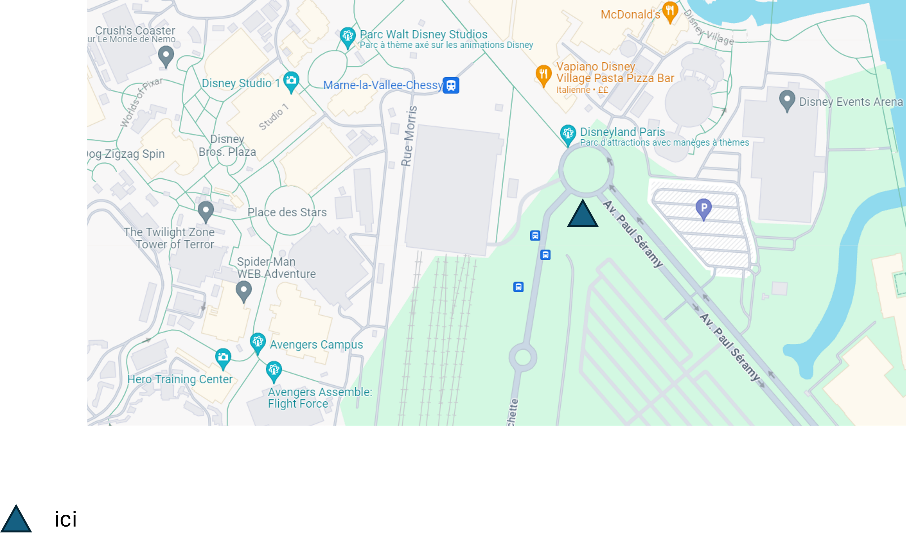

SOS D'UN IMPROVISATEUR EN DÉTRESSE
Accès rapide à :
Qui suis-je
l'impro et moi
Présentation des lieux
Présentation du projet
Qui suis-je ?
J’ai 32 ans, j’ai rédigé un ouvrage Mon monde rouge et blanc dans lequel je reviens sur le parcours du combattant qu'a été ma vie : ma scolarité, mes relations familiales, mes activités culturelles et sportives, mes débuts dans la vie professionnelles. Bien que je n'évoque que très brièvement l'impro, il est principalement question des obstacles voire des nuisances dans mes relations que j'endure encore. Professionnellement je travaille dans un célèbre institut cartographique. Je suis porteur de la même singularité que Paul El-Kharrat (vainqueur des Douze Coups de Midi, écrivain et chroniqueur aux Grosses têtes) et Josef Schovanec (philosophe, docteur en philosophie, militant, écrivain), à savoir un TSA (Trouble du Spectre Autistique). J'en ai même fait ma devise en deux mille quinze : "Être aspie et faire de 'impro, c'est possible." Un.e aspie est une personne atteinte d'un TSA.
l'impro et moi
J’ai pratiqué l’impro durant quatre années réparties entre deux mille quatorze et deux mille vingt-quatre :
_2014-2016 : les Incubés : atelier des Malades de l'Imaginaire (Paris 12ème) : élève mais aussi bénévole. En tant qu'incubé, je pouvais gratuitement assister aux matches des Malades de l'Imaginaire. En contrepartie, j'ai été une fois assistant arbitre (le 3 octobre 2015 lors de leur match contre la LISM), deux fois tenu le bar (servir des en-cas et des boissons avant le spectacle et pendant l'entracte : le 7 novembre 2015 et le 6 février 2016), accueilli une fois les spectateurs/spectatrices (vérifier leur réservation sur la liste, les encaisser).
_Édithéa (école de théâtre et d'impro à Paris) : 2017-2018 : 4 spectacles (1 Air Théa (25 novembre 2017), 3 Improthéas (5 novembre 2017, 4 février et 4 mars 2018))
_les Grands Méchants Flous (Paris) : 2017-2018 : 3 cabarets (1 match interne dans une yourte à Montreuil (8 avril 2018), 1 cabaret (30 mai 2018), 1 cabaret-match (20 juin 2018))
_les 1Probables (Noisy-le-grand) : 2023-2024 : 1 cabaret le 31 mars 2024
Cette discipline m'a fait un bien fou. Elle m'a permis de développer la concentration, l'écoute, le lâcher-prise, parmi mes plus grandes difficultés jusqu'à ce que je démarre l'impro. Comme tu l'as constaté, j'ai effectué des pauses dans l'impro, pour diverses raisons (directement ou indirectement liées aux troupes d'impro dans lesquelles j'étais).
Galérant et désespérant à trouver un atelier d'impro en Marne-et-Gondoire, j'ai contacté Impro France qui se trouve à Trappes (Yvelines). Le président de cette asociation a répondu à mon courriel en me proposant de faire un stage de formateur pour progresser dans mon projet. J'ai donné une copie de mon attestation de suivi et réussite de stage accompagnée d'une description précise de mon idée de création de ligue d'impro à la chargée de développement culturel de ma commune. La bouteille est toujours à la mer (ou dans les champs si tu veux davantage être lucide sur les lieux). Ton aide m'est donc plus que précisuse pour y parvenir.
À écouter : Podcast BSMTT (Bien sûr mais tais-toi)
Présentation des lieux
Un peu de géographie. Comme disait Jamy Gourmaud dans C'Est Pas Sorcier lorsqu'il montrait une carte voire une maquette pour situer où se passait telle émission. Nous sommes en région Île-de-France, dans le département de la Seine-et-Marne. Tu connais probablement la ville nouvelle de Marne-la-Vallée. Elle contient notamment le parc Disneyland Paris. Petit chapitre transports. Pour accéder à ce célèbre parc d'attractions, il y a de grands axes comme l'autoroute A4 (autoroute de l'Est reliant Paris à Strasbourg), la LGV (Ligne à Grande Vitesse) Interconnexion Est sur laquelle se trouve la gare de Marne-la-Vallée Chessy (tout près de Disneyland) qui est aussi le terminus actuel du RER A. Pour terminer cette présentation, je vais te dévoiler la zone dans laquelle je souhaite créer un atelier voire une ligue d'impro. Il s'agit des communes de :
_Torcy (gare du RER A)
_Saint-Thibault-les-Vignes
_Collégien
_Bussy-Saint-Georges (gare du RER A) : profite-en pour visiter le moulin Rousson
Moulin du Rousson_Ferrières-en-brie : visite son château
château de Ferrières_Montévrain : avec le centre commercial Val d'Europe à proximité duquel se trouve une station du RER A
_Chessy : abrite en partie le parc Disneyland et la gare dont il est question ci-dessus.
Présentation du projet
Comme tu l'as compris, l'objectif est de développer l'impro dans ce secteur. Il existe une troupe dans le sud du département : la LISM. Sauf qu'elle est loin de Marne-la-Vallée et n'est accessible qu'en automobile (ou au mieux des bus mais bon courage pour le trajet). Pourtant, Vaulx-le-Pénil (commune où est la LISM) n'abrite qu'une dizaine de milliers d'habitants, alors que les communes de Marne-la-Vallée sont bien plus peuplées. Alors rééquilibrons et créons une ligue sur Marne-la-Vallée. Je proposerais plusieurs sites pour créer cette ligue d'impro :
_Torcy : le long de l'accès piéton au centre commercial Bay 2

_Bussy St Georges : au niveau du giratoire à l'extrémité ouest de l'avenue du Général de Gaulle, tout près de la Médiathèque de l'Europe

_Chessy : à la gare routière sud

Ces communes étant desservies par le RER A, et étant passionné de transports depuis des décennies, je suggère que des rames MI09 soient réaménagées afin qu'elles abritent ce lieu où l'on improvisera.